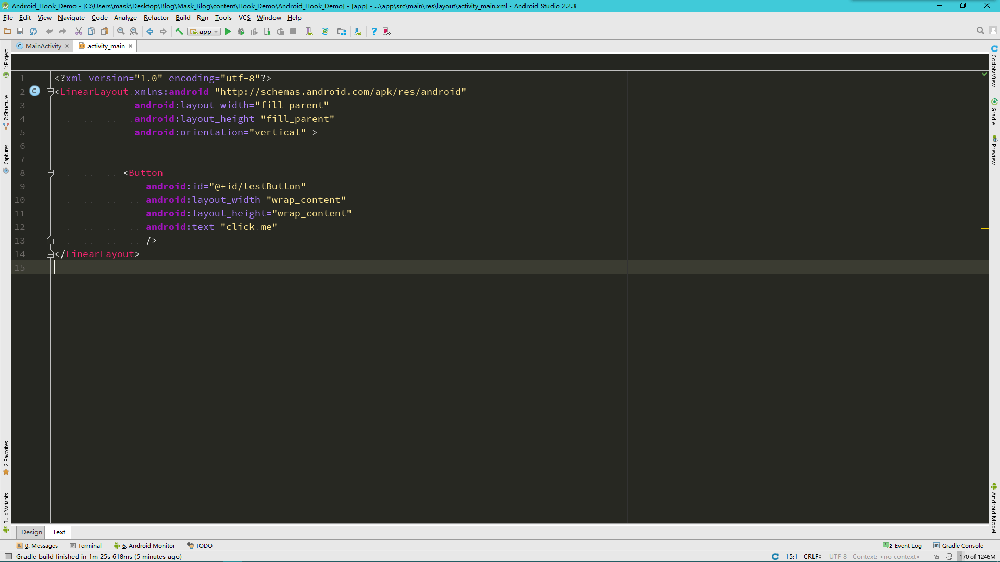
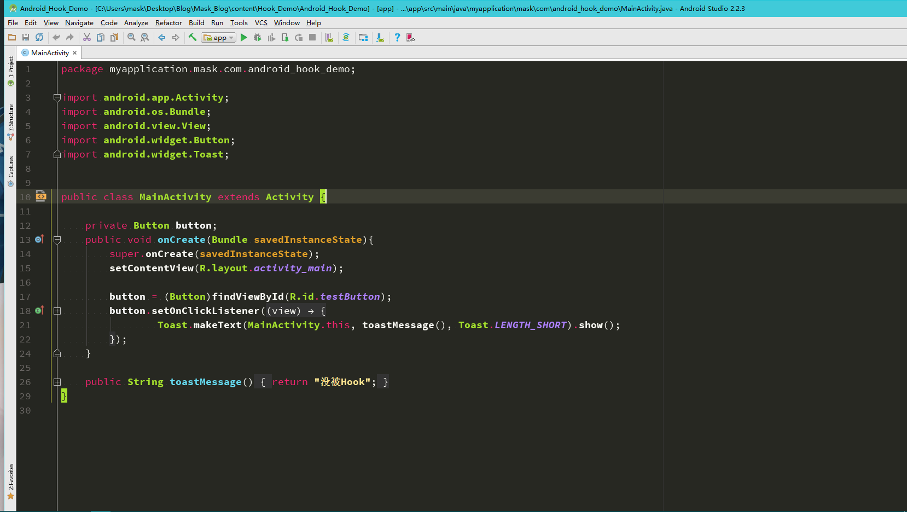
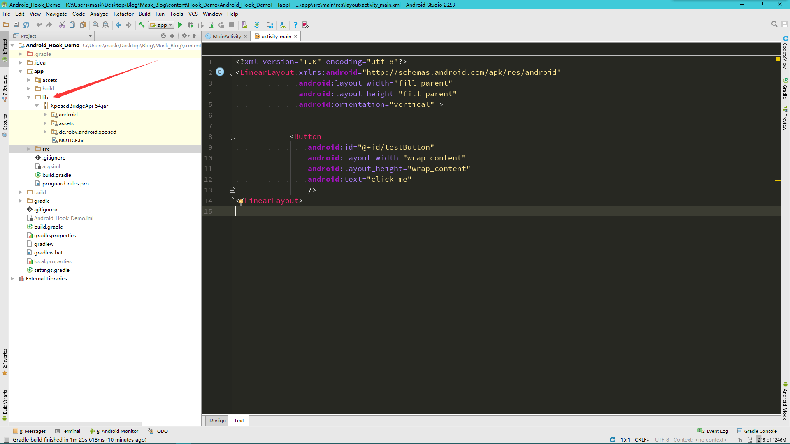
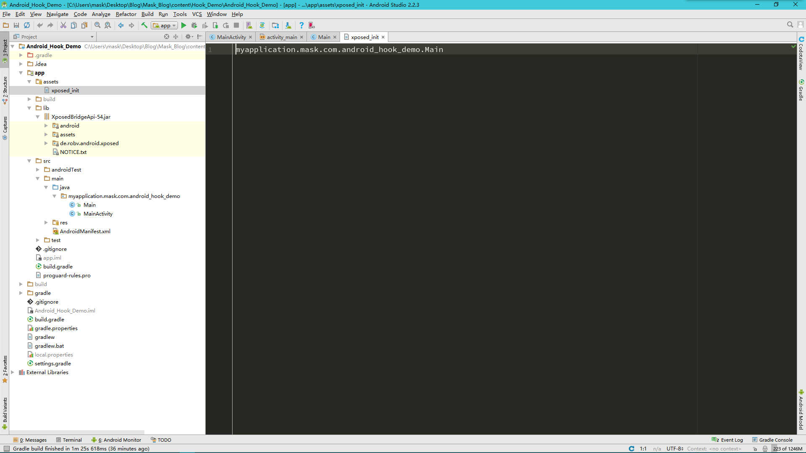
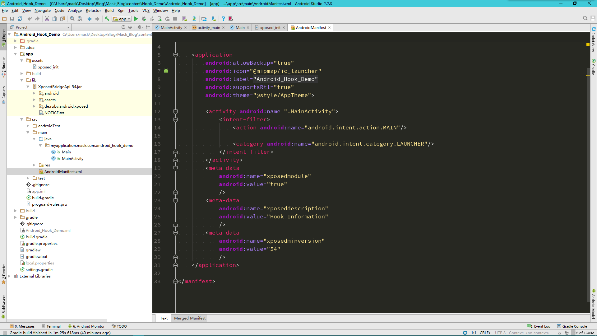
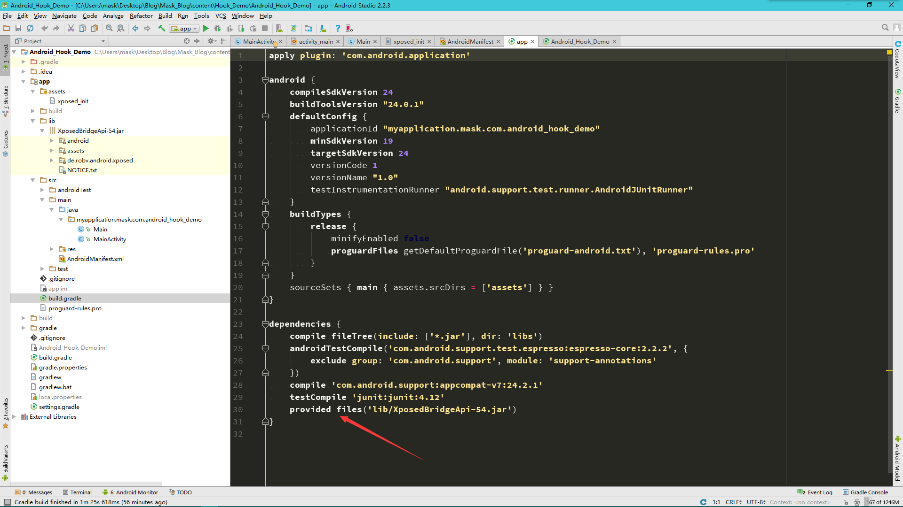
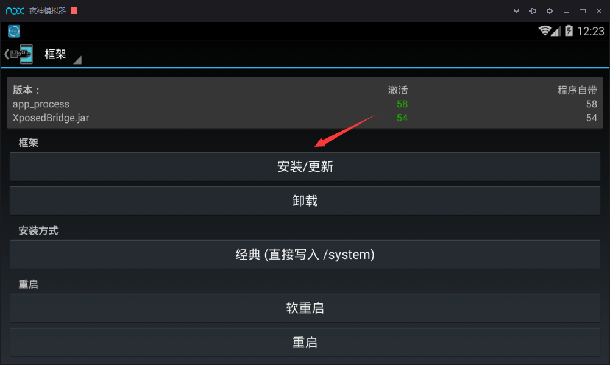
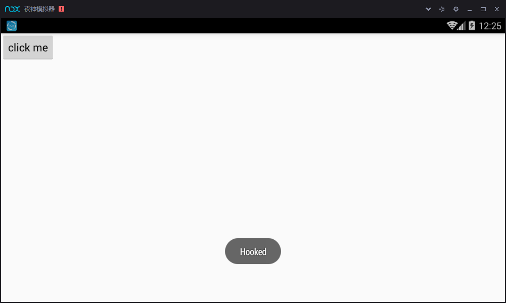

首先新建一个Android Studio项目工程 
定义一个Button,然后再定义一个点击事件，在没被Hook的情况下，Toast出"没被Hook“  这时候来到Project目录下，在app下新建一个lib文件夹，将XposedBridgeApi-54.jar导入（我这里使用的Android4.4所以对应的是这个版本，4.4以上的系统可以去网上下载对应的jar包，） 第三方jar包 下载地址http://forum.xda-developers.com/showthread.php?t=3034811  这时候我们就能调用这个第三方库来编写Xposed函数了 新建一个方法
package myapplication.mask.com.android_hook_demo;
import android.util.Log;import de.robv.android.xposed.IXposedHookLoadPackage;
import de.robv.android.xposed.XC_MethodHook;
import de.robv.android.xposed.XposedHelpers;
import de.robv.android.xposed.callbacks.XC_LoadPackage;
/**
* Created by mask on 2017/3/4.
*/
public class Main implements IXposedHookLoadPackage {
@Override
public void handleLoadPackage(XC_LoadPackage.LoadPackageParam loadPackageParam)throws Throwable{
Log.i("XposedDemo", "Call handleLoadPackage");
if (loadPackageParam.packageName.equals("myapplication.mask.com.android_hook_demo")){
Log.i("XposedDemo", "Enter " + loadPackageParam.packageName);
Class clazz = loadPackageParam.classLoader.loadClass("myapplication.mask.com.android_hook_demo.MainActivity");
XposedHelpers.findAndHookMethod(clazz, "toastMessage", new XC_MethodHook() {
@Override
protected void beforeHookedMethod(MethodHookParam param) throws Throwable {
super.beforeHookedMethod(param);
}
@Override
protected void afterHookedMethod(MethodHookParam param)throws Throwable{
param.setResult("Hooked");
}
});
}
}
}
这里我们需要Hook的方法就是那个Toast方法，并让它显示“Hooked"。 新建一个实现IXposedHookLoadPackage接口的类，并实现handleLoadPackage方法，让系统打印出相应的语句，判断是否Hook住了相应的方法。首先调用一个loadPackageParam.packageName.equals()判断是否找到了对应的包名，然后看看loadPackageParam.classLoader.loadClass()方法，这个方法是找到对应的类名，这里我们用一个Class接受，然后是findAndHookMethod方法，这里传入了三个参数，分别是对应的类名，要Hook的方法，XC_MethodHook()函数。 XC_MethodHook()函数实现了两个方法，一个是Hook前的，一个是Hook后的，重点看这个Hook后需要回调的函数，afterHookedMethod函数传入了一个参数，这个参数是toastMessage()方法返回的结果，我们这里把他截住，并设置自己的值，那么这就是一个简单地Xposed函数。
接下来，新建一个assets文件夹，然后新建一个xposed_init文件，这个文件是用来告诉Hook入口的，即那个类里实现了Hook函数  下一个就是修改项目的AndroidMainifest.xml文件
<meta-data
android:name="xposedmodule"
android:value="true" //值为true说明这个Xposed模块有效
/>
<meta-data
android:name="xposeddescription"
android:value="Hook Information" //这里是一些对这个模块的描述信息
/>
<meta-data
android:name="xposedminversion"
android:value="54" //最低要求版本号
/>
 最后修改一下项目的build.gradle文件 导入第三方模块的时候会有一下几种方式:
方式:1： 它就会自动把这个包下载下来， 并且引用它， 节省Git空间， 而且修改版本也很方便
compile 'com.android.support:support-v4:23.3.0'
方式2： 引用libs下所有jar包
compile fileTree(dir: 'libs', include: ['*.jar'])
方式3： 引用一个jar
compile files('libs/fastjson-1.1.53.android.jar')
方式4： 引用一个aar文件， 注意并不能像方式2那样自动引用全部的aar， 而需要对每个aar分别进行引用
compile(name: 'aar_file_name', ext: 'aar')
方式5： 引用库类型的项目
compile project(':xxxsdk')
方式6： 仅仅在编译时使用， 但最终不会被编译到apk或aar里
provided files('libs/glide-3.7.0.jar')
那么我们这里只是编译是需要使用这个jar包即可，因为我们会在手机里安装一个Xposed框架，那么我们的Xposed模块就能被它调用，所以我们不需要将这个jar包打包进apk文件，那么我们修改一下

然后Xposed模块算是编写完成了，打开虚拟机，我们需要获取root权限，然后下载一个Xposed框架安装器，下载地址 http://repo.xposed.info/module/de.robv.android.xposed.installer： 
安装完后重启即可 然后安装我们刚刚编写的apk文件，会提示你激活重启，最后
